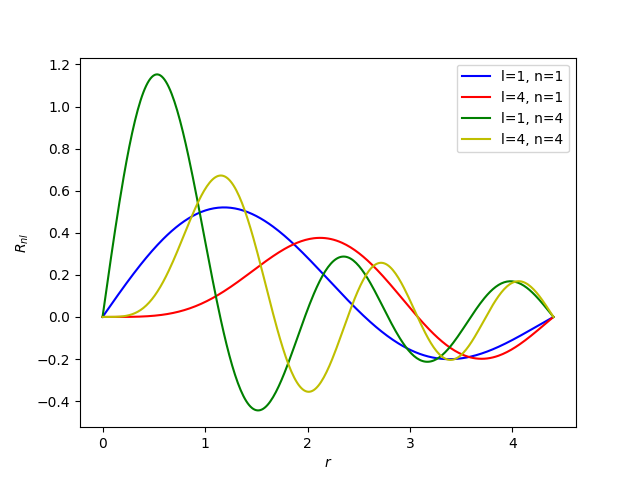
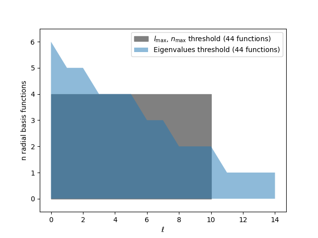

Laplacian eigenstate basis¶
This examples shows how to calculate a spherical expansion using a Laplacian eigenstate basis.
This example illustrates how to generate a spherical expansion using the Laplacian eigenstate (LE) basis (https://doi.org/10.1063/5.0124363), using two different basis truncations approaches. The basis can be truncated in the “traditional” way, using all values below a limit in the angular and radial direction; or using a “ragged truncation”, where basis functions are selected according to an eigenvalue threshold.
The main ideas behind the LE basis are:
use a basis of controllable smoothness (intended in the same sense as the smoothness of a low-pass-truncated Fourier expansion)
apply a “ragged truncation” strategy in which different angular channels are truncated at a different number of radial channels, so as to obtain more balanced smoothness level in the radial and angular direction, for a given number of basis functions.
Here we use rascaline.utils.SphericalBesselBasis to create a spline of the
radial integral corresponding to the LE basis. An detailed how-to guide how to construct
radial integrals is given in Splined radial integral.
import ase.io
import matplotlib.pyplot as plt
import numpy as np
from metatensor import Labels, TensorBlock, TensorMap
import rascaline
Let’s start by using a traditional/square basis truncation. Here we will select all
basis functions with l <= max_angular and n < max_radial. The basis functions
are the solution of a radial Laplacian eigenvalue problem (spherical Bessel
functions).
cutoff = 4.4
max_angular = 6
max_radial = 8
# create a spliner for the SOAP radial integral, using delta functions for the atomic
# density and spherical Bessel functions for the basis
spliner = rascaline.utils.SoapSpliner(
cutoff=cutoff,
max_radial=max_radial,
max_angular=max_angular,
basis=rascaline.utils.SphericalBesselBasis(
cutoff=cutoff, max_radial=max_radial, max_angular=max_angular
),
density=rascaline.utils.DeltaDensity(),
accuracy=1e-8,
)
We can now plot the radial integral splines for a couple of functions. This gives an idea of the smoothness of the different components
splined_basis = spliner.compute()
grid = [p["position"] for p in splined_basis["TabulatedRadialIntegral"]["points"]]
values = np.array(
[
np.array(p["values"]["data"]).reshape(p["values"]["dim"])
for p in splined_basis["TabulatedRadialIntegral"]["points"]
]
)
plt.plot(grid, values[:, 1, 1], "b-", label="l=1, n=1")
plt.plot(grid, values[:, 4, 1], "r-", label="l=4, n=1")
plt.plot(grid, values[:, 1, 4], "g-", label="l=1, n=4")
plt.plot(grid, values[:, 4, 4], "y-", label="l=4, n=4")
plt.xlabel("$r$")
plt.ylabel(r"$R_{nl}$")
plt.legend()
plt.show()

We can use this spline basis in a SphericalExpansion calculator to
evaluate spherical expansion coefficients.
calculator = rascaline.SphericalExpansion(
cutoff=cutoff,
max_radial=max_radial,
max_angular=max_angular,
center_atom_weight=1.0,
radial_basis=splined_basis,
atomic_gaussian_width=-1.0, # will not be used due to the delta density above
cutoff_function={"ShiftedCosine": {"width": 0.5}},
)
This calculator defaults to the “traditional” basis function selection, so we have the
same maximal n value for all l.
systems = ase.io.read("dataset.xyz", ":10")
descriptor = calculator.compute(systems)
descriptor = descriptor.keys_to_properties("neighbor_type")
descriptor = descriptor.keys_to_samples("center_type")
for key, block in descriptor.items():
n_max = np.max(block.properties["n"]) + 1
print(f"l = {key['o3_lambda']}, n_max = {n_max}")
l = 0, n_max = 8
l = 1, n_max = 8
l = 2, n_max = 8
l = 3, n_max = 8
l = 4, n_max = 8
l = 5, n_max = 8
l = 6, n_max = 8
Selecting basis with an eigenvalue threshold
Now we will calculate the same basis with an eigenvalue threshold. The idea is to treat on the same footings the radial and angular dimension, and select all functions with a mean Laplacian below a certain threshold. This is similar to the common practice in plane-wave electronic-structure methods to use a kinetic energy cutoff where \(k_x^2 + k_y^2 + k_z^2 < k_\text{max}^2\)
eigenvalue_threshold = 20
Let’s start by computing a lot of Laplacian eigenvalues, which are related to the squares of the zeros of spherical Bessel functions.
l_max_large = 49 # just used to get the eigenvalues
n_max_large = 50 # just used to get the eigenvalues
# compute the zeros of the spherical Bessel functions
zeros_ln = rascaline.utils.SphericalBesselBasis.compute_zeros(l_max_large, n_max_large)
We have a 50x50 array containing the position of the zero of the different spherical
Bessel functions, indexed by l and n.
print("zeros_ln.shape =", zeros_ln.shape)
print("zeros_ln =", zeros_ln[:3, :3])
# calculate the Laplacian eigenvalues
eigenvalues_ln = zeros_ln**2 / cutoff**2
zeros_ln.shape = (50, 50)
zeros_ln = [[ 3.14159265 6.28318531 9.42477796]
[ 4.49340946 7.72525184 10.90412166]
[ 5.7634592 9.09501133 12.32294097]]
We can now determine the set of l, n pairs to include all eigenvalues below the
threshold.
max_radial_by_angular = []
for ell in range(l_max_large + 1):
# for each l, calculate how many radial basis functions we want to include
max_radial = len(np.where(eigenvalues_ln[ell] < eigenvalue_threshold)[0])
max_radial_by_angular.append(max_radial)
if max_radial_by_angular[-1] == 0:
# all eigenvalues for this `l` are over the threshold
max_radial_by_angular.pop()
max_angular = ell - 1
break
Comparing this eigenvalues threshold with the one based on a square selection, we see
that the eigenvalues threshold leads to a gradual decrease of max_radial for high
l values
square_max_angular = 10
square_max_radial = 4
plt.fill_between(
[0, square_max_angular],
[square_max_radial, square_max_radial],
label=r"$l_\mathrm{max}$, $n_\mathrm{max}$ threshold "
+ f"({(square_max_angular + 1) * square_max_radial} functions)",
color="gray",
)
plt.fill_between(
np.arange(max_angular + 1),
max_radial_by_angular,
label=f"Eigenvalues threshold ({sum(max_radial_by_angular)} functions)",
alpha=0.5,
)
plt.xlabel(r"$\ell$")
plt.ylabel("n radial basis functions")
plt.ylim(-0.5, max_radial_by_angular[0] + 0.5)
plt.legend()
plt.show()

Using a subset of basis functions with rascaline
We can tweak the default basis selection of rascaline by specifying a larger total basis; and then only asking for a subset of properties to be computed. See Property Selection for more details on properties selection.
# extract all the atomic types from our dataset
all_atomic_types = list(
np.unique(np.concatenate([system.numbers for system in systems]))
)
keys = []
blocks = []
for center_type in all_atomic_types:
for neighbor_type in all_atomic_types:
for ell in range(max_angular + 1):
max_radial = max_radial_by_angular[ell]
keys.append([ell, 1, center_type, neighbor_type])
blocks.append(
TensorBlock(
values=np.zeros((0, max_radial)),
samples=Labels.empty("_"),
components=[],
properties=Labels("n", np.arange(max_radial).reshape(-1, 1)),
)
)
selected_properties = TensorMap(
keys=Labels(
names=["o3_lambda", "o3_sigma", "center_type", "neighbor_type"],
values=np.array(keys),
),
blocks=blocks,
)
With this, we can build a calculator and calculate the spherical expansion coefficients
# the biggest max_radial will be for l=0
max_radial = max_radial_by_angular[0]
# set up a spliner object for the spherical Bessel functions this radial basis will be
# used to compute the spherical expansion
spliner = rascaline.utils.SoapSpliner(
cutoff=cutoff,
max_radial=max_radial,
max_angular=max_angular,
basis=rascaline.utils.SphericalBesselBasis(
cutoff=cutoff, max_radial=max_radial, max_angular=max_angular
),
density=rascaline.utils.DeltaDensity(),
accuracy=1e-8,
)
calculator = rascaline.SphericalExpansion(
cutoff=cutoff,
max_radial=max_radial,
max_angular=max_angular,
center_atom_weight=1.0,
radial_basis=spliner.compute(),
atomic_gaussian_width=-1.0, # will not be used due to the delta density above
cutoff_function={"ShiftedCosine": {"width": 0.5}},
)
And check that we do get the expected Eigenvalues truncation for the calculated features!
descriptor = calculator.compute(
systems,
# we tell the calculator to only compute the selected properties
# (the desired set of (l,n) expansion coefficients
selected_properties=selected_properties,
)
descriptor = descriptor.keys_to_properties("neighbor_type")
descriptor = descriptor.keys_to_samples("center_type")
for key, block in descriptor.items():
n_max = np.max(block.properties["n"]) + 1
print(f"l = {key['o3_lambda']}, n_max = {n_max}")
l = 0, n_max = 6
l = 1, n_max = 5
l = 2, n_max = 5
l = 3, n_max = 4
l = 4, n_max = 4
l = 5, n_max = 4
l = 6, n_max = 3
l = 7, n_max = 3
l = 8, n_max = 2
l = 9, n_max = 2
l = 10, n_max = 2
l = 11, n_max = 1
l = 12, n_max = 1
l = 13, n_max = 1
l = 14, n_max = 1